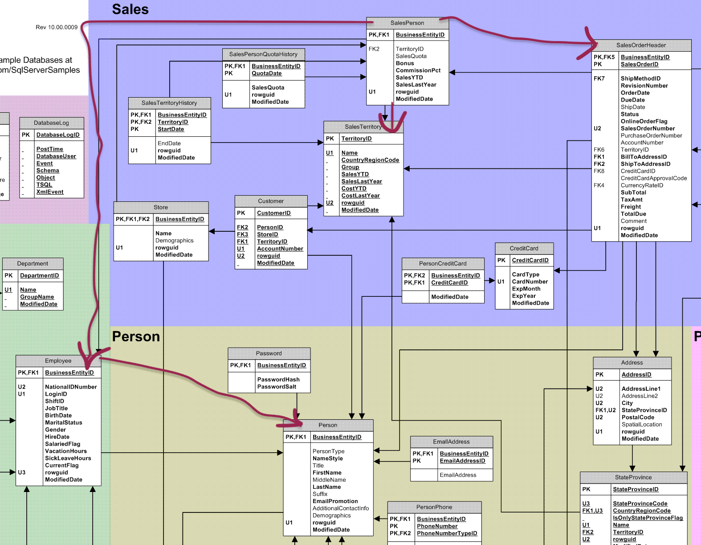

Chapter 12 Leveraging Database Views
This chapter demonstrates how to:
- Assess database views, understand their importance
- Unpack a database view and check its assumptions
- Create a database view either for personal use or for submittal to your enterprise DBA
12.1 Setup our standard working environment
Use these libraries:
library(tidyverse)
library(DBI)
library(RPostgres)
library(glue)
require(knitr)
library(dbplyr)
library(sqlpetr)
library(bookdown)
library(here)
library(lubridate)
library(skimr)
library(DiagrammeR)
library(scales) # ggplot xy scales
theme_set(theme_light())Connect to adventureworks:
12.2 The role of database views
A database view is an SQL query that is stored in the database. Most views are used for data retrieval, since they usually denormalize the tables involved. Because they are standardized and well-understood, they can save you a lot of work.
12.2.1 Why database views are useful
Database views are useful for many reasons.
- Authoritative: database
viewsare typically written by the business application vendor or DBA, so they contain authoritative knowledge about the structure and intended use of the database. - Performance:
viewsare designed to gather data in an efficient way, using all the indexes in an efficient sequence and doing as much work on the database server as possible. - Abstraction:
viewsare abstractions or simplifications of complex queries that provide customary (useful) aggregations. Common examples would be monthly totals or aggregation of activity tied to one individual. - Reuse: a
viewputs commonly used code in one place where it can be used for many purposes by many people. If there is a change or a problem found in aview, it only needs to be fixed in one place, rather than having to change many places downstream. - Security: a view can give selective access to someone who does not have access to underlying tables or columns.
- Provenance:
viewsstandardize data provenance. For example, theAdventureWorksdatabase all of them are named in a consistent way that suggests the underlying tables that they query. And they all start with a v.
12.2.2 Rely on and be critical of views
Because they represent a conventional view of the database, a view may seem quite boring; remember why they are very important. Just because they are conventional and authorized, they may still need verification or auditing when used for a purpose other than the original intent. They can guide you toward what you need from the database but they could also mislead because they are easy to use and available. People may forget why a specific view exists and who is using it. Therefore any given view might be a forgotten vestige or part of an production data pipeline or might a priceless nugget of insight.
12.2.3 How to unpack and inspect a view
From a retrieval perspective a database view is just like any other table. Using a view to retrieve data from the database will be completely standard across all flavors of SQL. (To find out what a view does behind the scenes requires that you use functions that are not standard.)
v_salesperson_sales_by_fiscal_years_data <-
tbl(con, in_schema("sales","vsalespersonsalesbyfiscalyearsdata")) %>%
collect()
str(v_salesperson_sales_by_fiscal_years_data)## Classes 'tbl_df', 'tbl' and 'data.frame': 48 obs. of 6 variables:
## $ salespersonid : int 275 275 275 275 276 276 276 276 277 277 ...
## $ fullname : chr "Michael G Blythe" "Michael G Blythe" "Michael G Blythe" "Michael G Blythe" ...
## $ jobtitle : chr "Sales Representative" "Sales Representative" "Sales Representative" "Sales Representative" ...
## $ salesterritory: chr "Northeast" "Northeast" "Northeast" "Northeast" ...
## $ salestotal : num 63763 2399593 3765459 3065088 5476 ...
## $ fiscalyear : num 2011 2012 2013 2014 2011 ...| Name | tbl(con, in_schema("sales… |
| Number of rows | 48 |
| Number of columns | 6 |
| _______________________ | |
| Column type frequency: | |
| character | 3 |
| numeric | 3 |
| ________________________ | |
| Group variables | None |
Variable type: character
| skim_variable | n_missing | complete_rate | min | max | empty | n_unique | whitespace |
|---|---|---|---|---|---|---|---|
| fullname | 0 | 1 | 9 | 26 | 0 | 14 | 0 |
| jobtitle | 0 | 1 | 20 | 20 | 0 | 1 | 0 |
| salesterritory | 0 | 1 | 6 | 14 | 0 | 10 | 0 |
Variable type: numeric
| skim_variable | n_missing | complete_rate | mean | sd | p0 | p25 | p50 | p75 | p100 | hist |
|---|---|---|---|---|---|---|---|---|---|---|
| salespersonid | 0 | 1 | 281.19 | 4.57 | 275.00 | 277.75 | 280.50 | 283.25 | 290 | ▇▆▅▁▃ |
| salestotal | 0 | 1 | 1635214.51 | 1243833.87 | 5475.95 | 533827.70 | 1371169.72 | 2409498.88 | 4188307 | ▇▇▆▃▃ |
| fiscalyear | 0 | 1 | 2012.69 | 1.09 | 2011.00 | 2012.00 | 2013.00 | 2014.00 | 2014 | ▅▆▁▇▇ |
## # Source: lazy query [?? x 6]
## # Database: postgres [postgres@localhost:5432/adventureworks]
## salespersonid fullname jobtitle salesterritory salestotal fiscalyear
## <int> <chr> <chr> <chr> <dbl> <dbl>
## 1 275 Michael G B… Sales Represe… Northeast 63763. 2011
## 2 275 Michael G B… Sales Represe… Northeast 2399593. 2012
## 3 275 Michael G B… Sales Represe… Northeast 3765459. 2013
## 4 275 Michael G B… Sales Represe… Northeast 3065088. 2014Local idioms for looking at a view itself will vary. Here is the code to retrieve a PostgreSQL view (using the pg_get_viewdef function):
view_definition <- dbGetQuery(con, "select
pg_get_viewdef('sales.vsalespersonsalesbyfiscalyearsdata',
true)")
str(view_definition)## 'data.frame': 1 obs. of 1 variable:
## $ pg_get_viewdef: chr " SELECT granular.salespersonid,\n granular.fullname,\n granular.jobtitle,\n granular.salesterritory,\n"| __truncated__## SELECT granular.salespersonid,
## granular.fullname,
## granular.jobtitle,
## granular.salesterritory,
## sum(granular.subtotal) AS salestotal,
## granular.fiscalyear
## FROM ( SELECT soh.salespersonid,
## ((p.firstname::text || ' '::text) || COALESCE(p.middlename::text || ' '::text, ''::text)) || p.lastname::text AS fullname,
## e.jobtitle,
## st.name AS salesterritory,
## soh.subtotal,
## date_part('year'::text, soh.orderdate + '6 mons'::interval) AS fiscalyear
## FROM sales.salesperson sp
## JOIN sales.salesorderheader soh ON sp.businessentityid = soh.salespersonid
## JOIN sales.salesterritory st ON sp.territoryid = st.territoryid
## JOIN humanresources.employee e ON soh.salespersonid = e.businessentityid
## JOIN person.person p ON p.businessentityid = sp.businessentityid) granular
## GROUP BY granular.salespersonid, granular.fullname, granular.jobtitle, granular.salesterritory, granular.fiscalyear;Even if you don’t intend to become fluent in SQL, it’s useful to read as much of it as possible.
To understand this query, you really need to have the Entity Relationship Diagram (ERD) handy. The ERD for AdventureWorks is here
{kind=link}
12.3 Reproduce the view with dplyr
Save and study the SQL.
It can be helpful to actually mark up the ERD to identify the specific tables that are involved in the view you are going to reproduce. 
Define each table that is involved and identify the columns that will be needed from that table. The tables that are involved are:
- employee
- person
- sales_person
- sales_order_header
- sales_territory
Select the columns and do any necessary changes or renaming. In this case we follow the convention that any column that we change or create on the fly uses a snake case naming con vention.
sales_order_header <- tbl(con, in_schema("sales", "salesorderheader")) %>%
# Because we're lazy, we will keep both a crude `year` column and `orderdate` for later use
mutate(sales_order_year = year(orderdate)) %>%
select(sales_order_year, salespersonid, subtotal, orderdate)
sales_territory <- tbl(con, in_schema("sales", "salesterritory")) %>%
select(territoryid, territory_name = name)
sales_person <- tbl(con, in_schema("sales", "salesperson")) %>%
select(businessentityid, territoryid)
employee <- tbl(con, in_schema("humanresources", "employee")) %>%
select(businessentityid, jobtitle)
person <- tbl(con, in_schema("person", "person")) %>%
mutate(full_name = paste(firstname, middlename, lastname)) %>%
select(businessentityid, full_name)Double check on the names that are defined in each tbl object. First define a function to show the names of columns you will retrieve.
Verify the names selected:
## [1] "businessentityid" "jobtitle"## [1] "businessentityid" "full_name"## [1] "businessentityid" "territoryid"## [1] "sales_order_year" "salespersonid" "subtotal" "orderdate"## [1] "territoryid" "territory_name"Join all of the data pertaining to a person.
salesperson_info <- sales_person %>%
left_join(employee) %>%
left_join(person) %>%
left_join(sales_territory) %>%
collect()## Joining, by = "businessentityid"Joining, by = "businessentityid"Joining, by =
## "territoryid"## Classes 'tbl_df', 'tbl' and 'data.frame': 17 obs. of 5 variables:
## $ businessentityid: int 274 275 276 277 278 279 280 281 282 283 ...
## $ territoryid : int NA 2 4 3 6 5 1 4 6 1 ...
## $ jobtitle : chr "North American Sales Manager" "Sales Representative" "Sales Representative" "Sales Representative" ...
## $ full_name : chr "Stephen Y Jiang" "Michael G Blythe" "Linda C Mitchell" "Jillian Carson" ...
## $ territory_name : chr NA "Northeast" "Southwest" "Central" ...Do a crude version with sales_order_year. All of the work can be done on the database server.
sales_data_year <- sales_person %>%
left_join(sales_order_header, by = c("businessentityid" = "salespersonid")) %>%
group_by(businessentityid, sales_order_year) %>%
summarize(sales_total = sum(subtotal, na.rm = TRUE)) %>%
collect()Lubridate makes it very easy to convert orderdate to fiscal_year. Doing that conversion interleaving dplyr and ANSI-STANDARD SQL is harder. Too lazy! Therefore we just pull the data from the server after the left_join and do the rest of the job on the R side.
sales_data_fiscal_year <- sales_person %>%
left_join(sales_order_header, by = c("businessentityid" = "salespersonid")) %>%
collect() %>%
mutate(fiscal_year = year(orderdate %m+% months(6))) %>%
group_by(businessentityid, fiscal_year) %>%
summarize(sales_total = sum(subtotal, na.rm = TRUE)) %>%
ungroup()Put the two parts together: sales_data_fiscal_year and person_info to yeild the final query.
salesperson_sales_by_fiscal_years_dplyr <- sales_data_fiscal_year %>%
left_join(salesperson_info) %>%
filter(!is.na(territoryid))## Joining, by = "businessentityid"Notice that we’re droping the Sales Managers – who don’t have a territoryid.
12.3.1 Compare the two versions
Use pivot_wider to make it easier to compare the native view to our dplyr version.
salesperson_sales_by_fiscal_years_dplyr %>%
select(-jobtitle, - territoryid) %>%
pivot_wider(names_from = fiscal_year, values_from = sales_total)## # A tibble: 14 x 7
## businessentityid full_name territory_name `2011` `2012` `2013` `2014`
## <int> <chr> <chr> <dbl> <dbl> <dbl> <dbl>
## 1 275 Michael G Bly… Northeast 63763. 2399593. 3.77e6 3.07e6
## 2 276 Linda C Mitch… Southwest 5476. 3013884. 4.06e6 3.28e6
## 3 277 Jillian Carson Central 46696. 3496244. 3.94e6 2.58e6
## 4 278 Garrett R Var… Canada 9109. 1254087. 1.18e6 1.17e6
## 5 279 Tsvi Michael … Southeast 104419. 3037175. 2.16e6 1.87e6
## 6 280 Pamela O Ansm… Northwest 24433. 1533076. 5.88e5 1.18e6
## 7 281 Shu K Ito Southwest 59708. 1953001. 2.44e6 1.98e6
## 8 282 José Edvaldo … Canada 106252. 2171995. 1.39e6 2.26e6
## 9 283 David R Campb… Northwest 69473. 1291905. 1.15e6 1.22e6
## 10 284 Tete A Mensa-… Northwest NA NA 9.59e5 1.35e6
## 11 286 Lynn N Tsofli… Australia NA NA 1.84e5 1.24e6
## 12 288 Rachel B Vald… Germany NA NA 3.72e5 1.46e6
## 13 289 Jae B Pak United Kingdom NA 963345. 4.19e6 3.35e6
## 14 290 Ranjit R Vark… France NA 360246. 1.77e6 2.38e6v_salesperson_sales_by_fiscal_years_data %>%
select(-jobtitle) %>%
pivot_wider(names_from = fiscalyear, values_from = salestotal)## # A tibble: 14 x 7
## salespersonid fullname salesterritory `2011` `2012` `2013` `2014`
## <int> <chr> <chr> <dbl> <dbl> <dbl> <dbl>
## 1 275 Michael G Blythe Northeast 63763. 2399593. 3.77e6 3.07e6
## 2 276 Linda C Mitchell Southwest 5476. 3013884. 4.06e6 3.28e6
## 3 277 Jillian Carson Central 46696. 3496244. 3.94e6 2.58e6
## 4 278 Garrett R Vargas Canada 9109. 1254087. 1.18e6 1.17e6
## 5 279 Tsvi Michael Re… Southeast 104419. 3037175. 2.16e6 1.87e6
## 6 280 Pamela O Ansman… Northwest 24433. 1533076. 5.88e5 1.18e6
## 7 281 Shu K Ito Southwest 59708. 1953001. 2.44e6 1.98e6
## 8 282 José Edvaldo Sa… Canada 106252. 2171995. 1.39e6 2.26e6
## 9 283 David R Campbell Northwest 69473. 1291905. 1.15e6 1.22e6
## 10 284 Tete A Mensa-An… Northwest NA NA 9.59e5 1.35e6
## 11 286 Lynn N Tsoflias Australia NA NA 1.84e5 1.24e6
## 12 288 Rachel B Valdez Germany NA NA 3.72e5 1.46e6
## 13 289 Jae B Pak United Kingdom NA 963345. 4.19e6 3.35e6
## 14 290 Ranjit R Varkey… France NA 360246. 1.77e6 2.38e6The column names don’t match up, partly because we are using snake case convention for derived elements.
## [1] "businessentityid" "fiscal_year" "full_name" "jobtitle"
## [5] "sales_total" "territory_name" "territoryid"## [1] "fiscalyear" "fullname" "jobtitle" "salespersonid"
## [5] "salesterritory" "salestotal"Why 3 sales folks in vsalesperson don’t show up in 2014 vsalespersonsalesbyfiscalyearsdata
Different environments / SQL dialects
12.3.2 Revise the view
- What about by month? This could be motivation for creating a new view that does aggregation in the database, rather than in R.
- See SQL code for ‘vsalespersonsalesbyfiscalyearsdata’. Consider:
- Modifying that to include quantity of sales.
- Modifying that to include monthly totals, in addition to the yearly totals that it already has.
- Why are 3 of the sales people from ‘vsalesperson’ missing in ‘vsalespersonsalesbyfiscalyearsdata’?
- Amy Alberts
- Stephen Jiang
- Syed Abbas
- Making the change may not be your prerogative, but it’s your responsibility to propose any reasonable changes to those who have the authority to make the make the change.